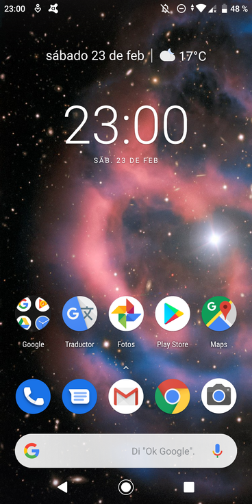
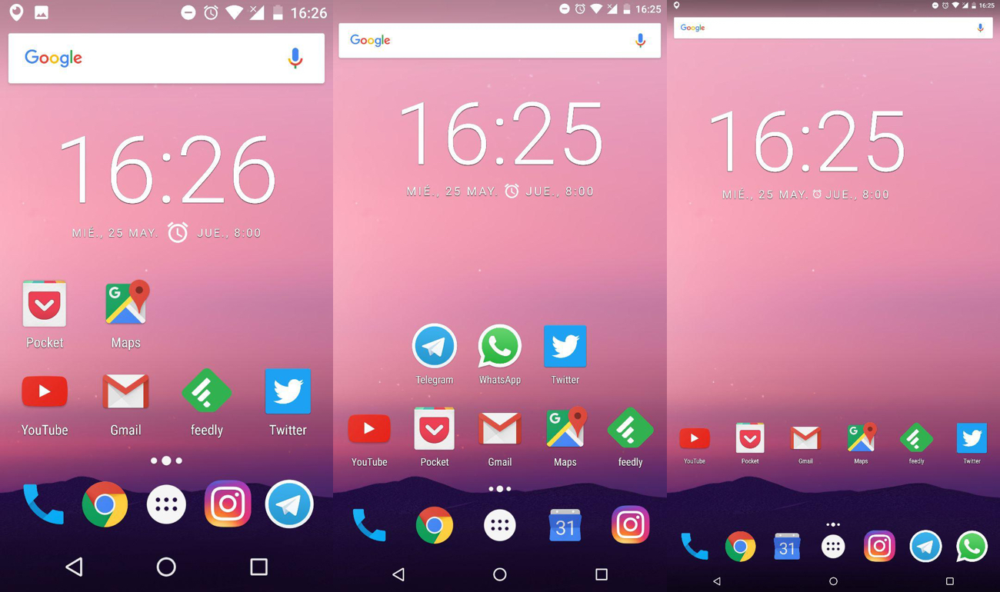
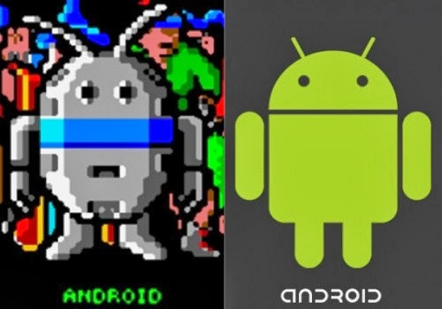

Audios
Datos Curiosos
Evolución de Android
Imagenes
Mejores Dispositivos Android
Videos Android
Videos YouTube
Android un Sistema Operativo Maravilloso.

Sistema Operativo

Android
Diseño
Distribución
Android Viejo Nuevo

Historia
Versiones